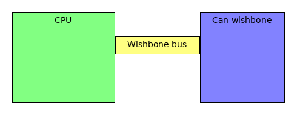

Can Wishbone¶
The can controller has a wishbone compabile interface implemented in the can_wb.vhd interface. This interfaces allows to configure,send and receive can messages from a soft core.
Register overview¶
| Register name. | Register address. | R/W. | Description. |
|---|---|---|---|
| REG_VERSION | 0x00000000 | RO | Version inforation |
| REG_STATUS | 0x00000001 | RO | Status register |
| REG_CONF | 0x00000002 | R/W | Configuration register |
| REG_SAMPLE_RATE | 0x00000003 | R/W | Sample rate control |
| REG_ID_FILTER | 0x00000004 | R/W | ID filter control |
| REG_ID_FILTER_MASK | 0x00000005 | R/W | ID filter mask control |
| REG_TX_ID | 0x00000006 | R/W | Transmit ID register |
| REG_TX_DLC | 0x00000007 | R/W | Transmit Data length |
| REG_TX_DATA0 | 0x00000008 | R/W | Transmit data low word |
| REG_TX_DATA1 | 0x00000009 | R/W | Transmist data high word |
| REG_TX_VALID | 0x0000000a | R/W | Set Transmit registers validity |
| REG_RX_ID | 0x0000000b | R/W | Receiver ID register |
| REG_RX_DLC | 0x0000000c | R/W | Reciever data length register |
| REG_RX_DATA0 | 0x0000000d | R/W | Reciever data low word |
| REG_RX_DATA1 | 0x0000000e | R/W | Receiver data high word |
| REG_RX_DRR | 0x0000000f | R/W | Receiver data read ready status |
Register description¶
Here you will find a description of the registers but to be sure .. use the source
REG_VERSION¶
Can controller version reads h”13371337’
REG_STATUS¶
code: source Status register
| BIT | Description |
|---|---|
| 0 | rx status 0 = idle , 1 = busy |
| 1 | tx status 0 = idle , 1 = busy |
| 2 | rx crc error |
| 3 | rx data ready |
| 4 | tx lost artibration error |
REG_CONF¶
(loopback,selftest )
REG_SAMPLE_RATE¶
REG_ID_FILTER¶
REG_ID_FILTER_MASK¶
REG_TX_ID¶
tx_id (11 msb are id) and lsb is request response
REG_TX_DLC¶
REG_TX_DATA0¶
REG_TX_DATA1¶
REG_TX_VALID¶
REG_RX_ID¶
tx_id (11 msb are id) and lsb is request response
REG_RX_DLC¶
REG_RX_DATA0¶
REG_RX_DATA1¶
REG_RX_DRR¶
(the data has been read)